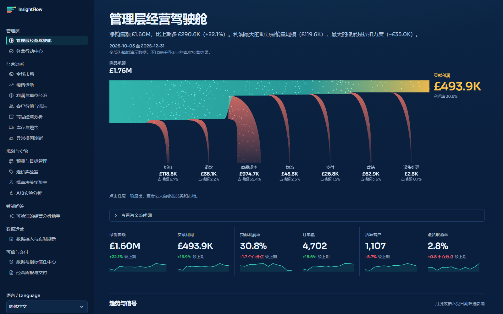
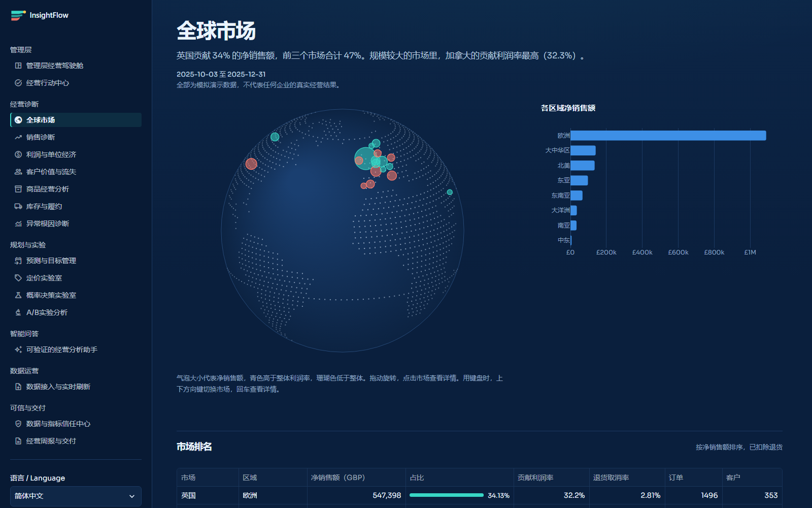
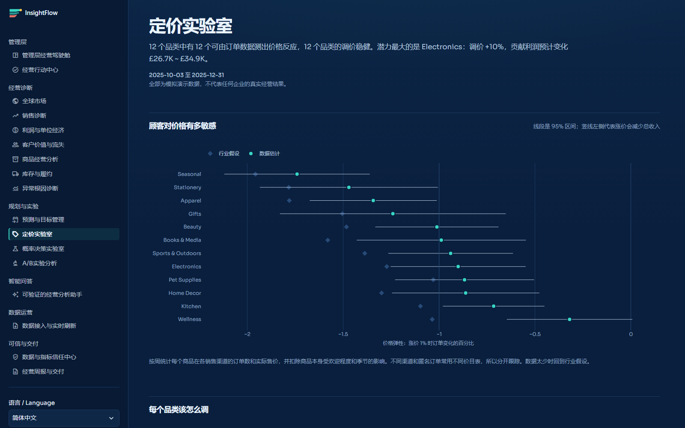
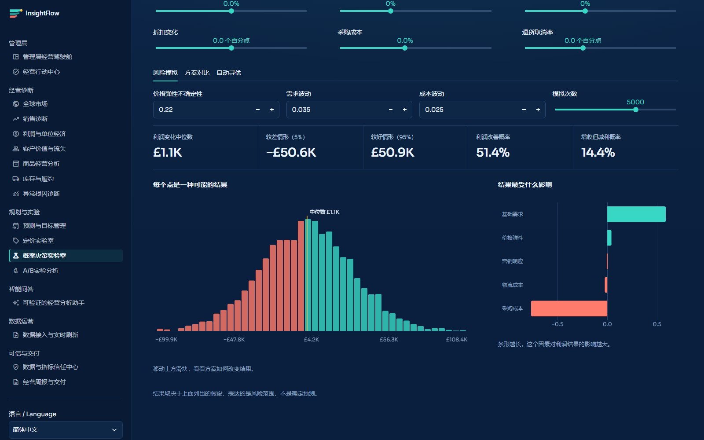

版本 2.0.0，2026 年 11 月
一个零售经营分析与决策平台。它把交易数据变成一条看得见的资金流，告诉你钱从哪里来、在哪里流失，并在你做决定之前先模拟结果。2.0 在 106 万行的真实公开账本上完整跑过，问题都修完了才发布。

用公开的 UCI Online Retail II 数据集，在真实浏览器里上传、导入，再逐页检查。下面的数字都来自那次运行。
每个页面先用一句话说清发生了什么，再给出依据。每张图都可以切换成表格查看。
动态资金流和价格、销量、结构、成本桥接，各项相加等于实际变化，未解释差额为零。
经营总览、利润与单位经济可拖动的地球仪，用鼠标或键盘选中市场，查看规模、利润率和退货。
全球市场用订单数据估计价格弹性，按销售渠道分别跟踪，每条调价建议都带利润区间。
定价实验室Monte Carlo 模拟数千种结果，并在同一批模拟未来上比较所有价格、折扣和营销组合。
概率决策实验室流失模型通过跨期验证才启用，达不到标准时页面会说明，并改用可解释的规则分数。
客户价值与流失逐行记录数据来源，指标可信度取决于最弱的输入。估算值会标明，不会被当成审计数字。
数据与指标信任中心


演示数据是干净的，真实账本不是。下面这些问题，只有在真实数据上跑过才会出现，现在都有回归测试守住。
| 情形 | 之前 | 现在 |
|---|---|---|
| 源文件没有折扣字段 | 凭空扣了 3% 折扣，净销售额比源文件少 £56.6 万 | 按成交价计，与源文件逐分对账 |
| 有几千行零价记录 | 整个文件被拒绝导入 | 问题行隔离、可下载，确认后照常导入 |
| 同一商品有两套价目表 | 网店和批发价格混在一起，弹性被拉到 −0.16 | 按销售渠道分别跟踪，得到 −0.96 |
| 邮费和平台手续费 | 算作商品销售，亚马逊手续费被记成 £22 万退款 | 作为非商品行单独列出 |
| 源文件没有库存 | 编造库存量，并据此发出补货告警 | 不编造数据，只分析需求 |
| 当天下单又取消的大单 | 80,995 件被算成日需求 900 | 需求按扣除退货后的净数计算 |
需要 Python 3.10 或更高版本。Windows 上也可以直接双击 run_windows.bat。首次打开会自动生成演示数据，约需 15 秒。
git clone https://github.com/zhao-yushen/InsightFlow-Analytics.git
cd InsightFlow-Analytics
python -m venv .venv
.venv\Scripts\activate
pip install -e .
insightflow run